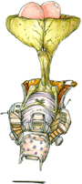

5 |
Preface |
 |

A Note From the Producer It has been 10 years since the original MDK2 was released as the sequel to Shiny Entertainment’s 1997 MDK. It was a great experience to be part of an incredibly talented and dedicated team that created the original product. Revisting MDK2 has been an experience unto itself. A lot has changed in 10 years but MDK2 still entertains, I still find the game challenging and most of all funny. A strange mix of humour, violence, and style the MDK series has been elusive to exact classification. I feel this version of MDK2 to be its best.  To those fans of the original, it's definitely worth playing again and to those new to MDK2, you won't be disappointed. This version includes an instant save feature as well as a quick save and load. In my mind, this makes the game less 'frustrating' but just as challenging. Finishing MDK2 on Jinkies difficulty is still an achievement to be proud of. Other changes include the controls to match the Wii Remote. I am very pleased how they turned out. The graphics were adjusted to make the game much brighter and easier to see. As well the engine has been optimized for the Wii and maintains full frame rate through out the game. The size of this version is much smaller but we took every care to retain the original clarity and added where we could. It's been a pleasure revisiting MDK2, I hope you enjoy it. Cameron Tofer Producer |
 |
 |
 |